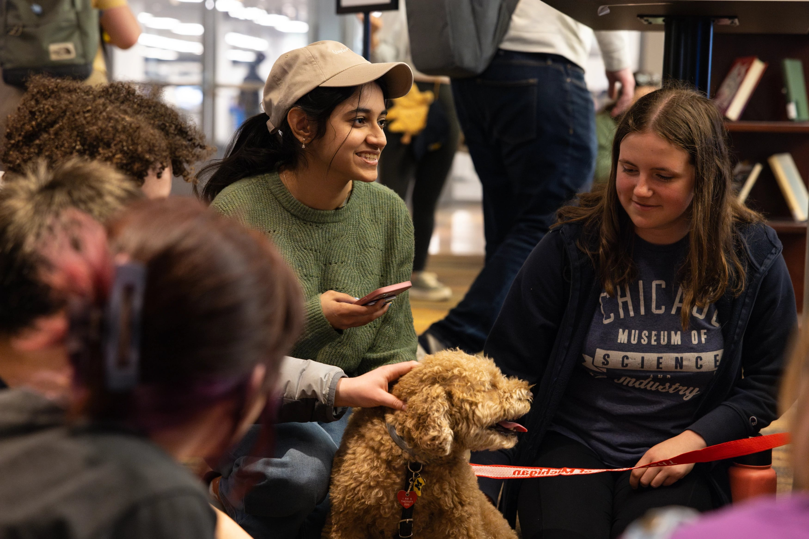

At the University of Michigan School of Information (UMSI), we are committed to supporting our students' academic success by offering a wide array of resources and services. Our academic advising team provides personalized guidance to help you navigate your curriculum, select courses, and address any academic challenges or questions you may encounter during your studies.
UMSI students also have access to the extensive collections and study spaces within the University Library system, offering both digital and physical resources essential for research and coursework. Additionally, our specialized tutoring services and the UMSI Writing Center are available to support you in mastering complex subjects and enhancing your written communication skills. By utilizing these academic resources, UMSI students can thrive in their studies and achieve their educational goals.
Academic Success
The UMSI Academic Programs and Student Life (APSL) team’s mission is to empower students to think broadly about their education and to create meaningful academic plans and student experiences that will prepare them to reach their personal and professional goals. Academic advisors challenge and support students to become self-directed learners, informed decision makers and engaged members of the UMSI community and beyond. This is achieved in practice through individual conversations, group advising and other programs/resources (e.g., Canvas/Coursera sites, academic planning guides, faculty talks).
The APSL Academic Advising team supports our residential academic programs at UMSI including students in the Bachelor of Science in Information, Master of Health Informatics and Master of Science in Information. The Online Programs Academic Advising team supports our online learners in the Master of Applied Data Science program. Both academic advising teams support our students through scheduled appointments via a scheduling system, regularly scheduled drop-in advising appointments and events which support students’ academic planning. We also offer academic support via online systems used within UMSI such as email, Slack, and Canvas/Coursera announcements.
For more information, access to academic planning resources and to contact an academic advisor, current students should refer to their program-specific academic advising site. You must be logged into the UMICH Google Suite to access the advising sites.
- Current BSI Students: Log in to the BSI Academic Advising Resource Site
- Current MHI Students: Log in to the MHI Academic Advising Resource Site
- Current MSI Students: Log in to the MSI Academic Advising Resource Site
- Current MADS Students: Log in to the MADS Academic Advising Resource Site
Student support
There are a variety of supports that the APSL team offers students in all academic programs at UMSI, including proactive programming via tutoring, iSuccess, resource fairs/presentations and skills enrichment workshops. We also help students navigate the numerous resources available at the University of Michigan, including advice on funding, support services on campus and finding a place to live. Through our various connection points with students, we promote early intervention mechanisms to identify students of concern through our faculty and academic difficulty reporting. The university also provides a wide range of services that students can access directly.
- UMSI Student Care Report: Please submit this form if you are aware of a UMSI student that needs additional support for a non-urgent concern, including but not limited to academic difficulty, well-being concerns, tutoring support and/or connection to university resources. The APSL team will work directly with the student to provide appropriate support resources. If you have any questions, please email umsi.academicsuccess@umich.edu.
- Accommodation support: UMSI is committed to the academic success, access, professional development and general well-being of all students. Information about Services for Students with Disabilities (SSD) is available at ssd.umich.edu. The APSL Academic Success team is available to support students through the process of getting registered with SSD and navigating their academic experience with disability accommodations.
- iSuccess: iSuccess is a series of activities and programs designed to support BSI transfer students’ successful transition to the University of Michigan and School of Information. iSuccess focuses on cohort-building while providing space for transfer students to address the unique opportunities and challenges they encounter as students new to the University of Michigan.
- Tutoring: UMSI's curriculum offers a hands-on approach to your educational success with office hours for each course shared with students and updated each term to connect quickly to instructors. In addition to support from instructors and graduate student instructors, there are other resources available such free, peer tutoring available to students, focusing on content areas such as programming and math. Students can review our UMSI Tutoring resources. The APSL Academic Success team is available to offer additional support and resources as needed. Current UMSI students can contact the APSL Academic Success team at umsi.academicsuccess@umich.edu.